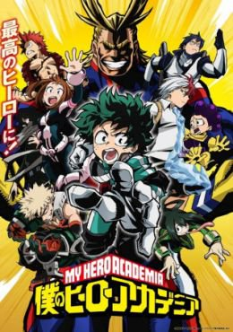

Las personas no nacen igual. El protagonista de esta historia es uno de esos casos raros que nacen sin superpoderes, pero esto no le impedirá perseguir su sueño: ser un gran héroe como el legendario All-Might. Para convertirse en el héroe que quiere ser, se apuntará a una de las academias de héroes más prestigiosas del país: Yueiko. Con la ayuda de su ídolo, All-Might, ¿podrá convertirse en un verdadero héroe?